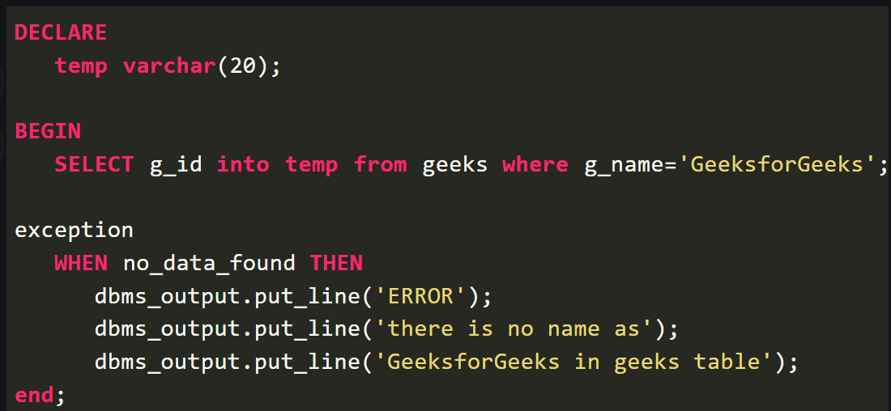

An error occurs during the program execution is called Exception in PL/SQL. PL/SQL facilitates programmers to catch such conditions using exception block in the program and an appropriate action is taken against the error condition.
PL/SQL Exception Handling
Syntax for exception handling:
DECLARE
(declarations section)
BEGIN
(executable command(s))
EXCEPTION
(exception handling goes here)
WHEN exception1 THEN
exception1-handling-statements
WHEN exception2 THEN
exception2-handling-state
ments WHEN exception3 THEN
exception3-handling-statements
........
WHEN others THEN
exception3-handling-statements
END;
